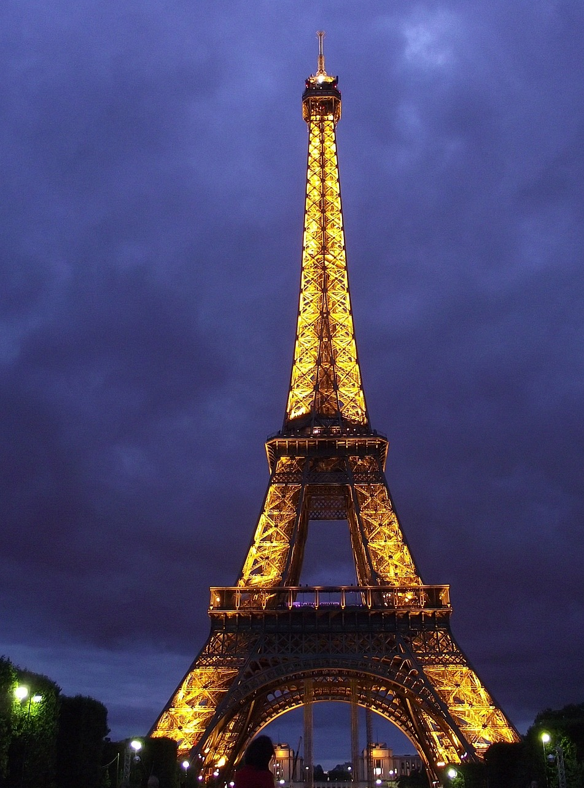

Parijs
Weetjes over Parijs:
- Er worden jaarlijks 200 films opgenomen in Parijs
- Stad van de liefde
- De eerste etappe van de Tour de France
- Lekkere wijnen
- Het Louvre, het grootste kunst museum ter wereld
Eiffeltoren
De Eiffeltoren is een monument in Parijs en een van bekendste en meest bezochte bezienswaardigheden van Frankrijk. Hij staat aan de linkeroever van de Seine in het 7e arrondissement van Parijs. De Eiffeltoren is hét symbool van Parijs en wordt door velen gezien als een van de Niet klassieke wereldwonderen. De toren ontving tussen 2011 en 2017 jaarlijks meer dan zes miljoen bezoekers en is daarmee het meest bezochte monument ter wereld waar een toegangskaartje voor gekocht moet worden. Op 28 november 2002 verwelkomde de Eiffeltoren zijn 200 miljoenste gast. 
Louvre
Het Louvre is een van 's werelds grootste musea en ligt in het 1e arrondissement van de Franse hoofdstad Parijs net ten noorden van de Seine. Het bestaat uit drie vleugels: de Richelieu-vleugel, de Sully-vleugel en de Denon-vleugel. De Mona Lisa van Leonardo da Vinci is waarschijnlijk het beroemdste stuk uit de collectie van het Louvre. Het museum maakt deel uit van de Réunion des musées nationaux et du Grand Palais des Champs-Élysées. Het is sinds jaren 's werelds best bezochte museum.